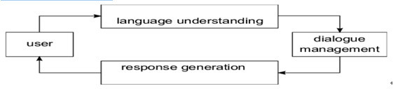
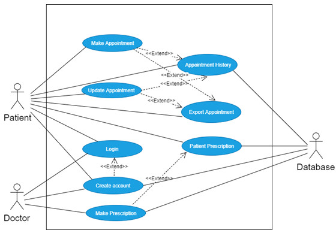

Tang poetry has become the treasure of Chinese traditional literature. So I want to make a chatbot to introduce famous Tang poetry and poets to foreign friends who want to understand Chinese traditional culture. Tang Dynasty is a golden age for the development of Chinese poetry. There are a huge number of Tang poetry and many outstanding poets were born. I have defined 3 user intents for my chatbot.
Famous Poetry:introduce the 50 most famous Tang poems.
Famous Poet:Introduce five most famous poets and their representative works.
Season Poetry: appreciate the beauty of the four seasons in Tang poetry.
This is a task-oriented text-based chatbot, I use a very popular structure which is decomposed into three major Components: Language Understanding, Dialogue Management, Response Generation. Scope the components clearly, so I can focus on each components task.

Language Understanding:Count keywords to identify user intent, required information and optional information. Extract needed information from the user message and put the extracted information to the Hash Table.
Dialogue Management:Based on value extracted from the hash table to decide what should I ask for the missing information or what should I answer.
Response Generation:Based on conversational action returned from dialogue manager to produce the valid responses in this situation.
This is Java application relying on NetBeans IDE. Download the Source Code for the detailed information.
AlphaCare
ATZ Healthcare provides services in the healthcare domain. The company wants to develop a role-based health care application called AlphaCare. Through AlphaCare, patients can see and manage their own medical records. Medical personnel can manage the medical records of their patients including those provided by other medical personnel, be alerted of patients with warning signs of chronic illness or missing immunizations, and perform bio-surveillance such as epidemic detection.
user interface:The user interface should be designed to be both simple and user-friendly. We chose JavaFX FXML, which is an XML-based language that provides the structure for building a user interface separate from the application logic of your code, thereby making the code easier to maintain.It also improves programming efficiency.
Uesr Case:Login, Create Account, Create Appointment, Update Appointment, Appointment History, Export Appointment,Make Prescription, Patient Prescription

Data Persistence:Sqlite Database.
This is Java application relying on NetBeans IDE. Download the Source Code for the detailed information.
Machu Picchu
Introduction
Machu Picchu is a 15th century Inca castle located in the Eastern Cordillera of southern Peru. It is considered to have been the estate for the Inca emperor Pachacuti. The Spanish didn't know about it during the colonial period and remained unknown to the outside world until American historian Hiram Bingham brought it to international attention in 1911.
What attracts me
What attracts me most to Machu Picchu is its construction. Machu Picchu was built without the use of mortar, metal tools or wheels and is a marvel of human creation. These stones are precisely cut and wedged tightly together, and no credit card can be inserted between them. In addition to the obvious aesthetic benefits of this building style, there are engineering advantages. Peru is a country with unstable earthquakes. Machu Picchu itself was constructed on two fault lines. When an earthquake occurs, the stones in the Inca buildings are called "dances," that is, they bounce back in the tremor and then return to their original position. Without this method of construction, many of Machu Picchu's most famous buildings would be collapsed long ago. No one has yet understood how the Inca civilization can carry a huge stone weighing 20 tons to the top of Machu Picchu. We may never know some of this places hidden secrets, but that’s why it is so attractive.